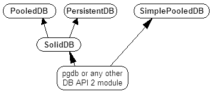
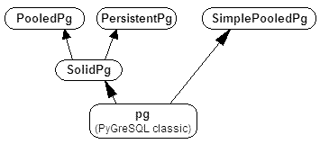
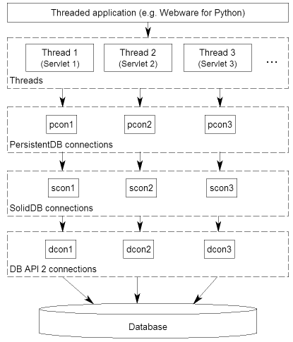
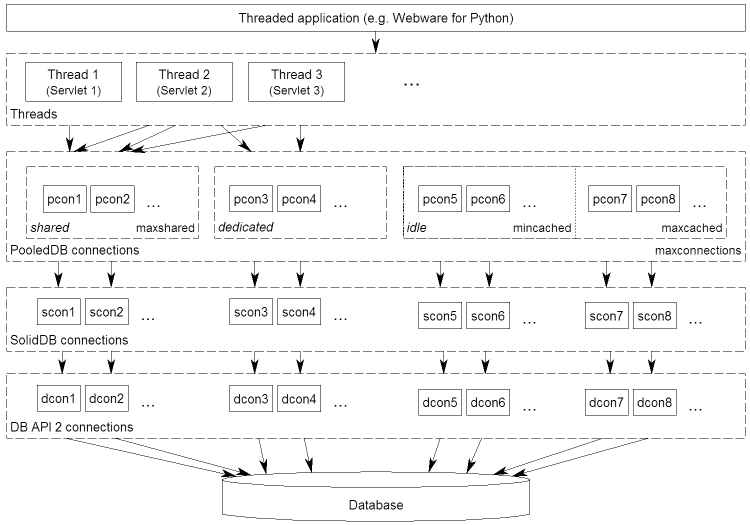

| Version: | 1.1 |
|---|---|
| Released: | 08/14/11 |
| Translations: | English German |
Contents
DBUtils is a suite of Python modules allowing to connect in a safe and efficient way between a threaded Python application and a database. DBUtils has been written in view of Webware for Python as the application and PyGreSQL as the adapter to a PostgreSQL database, but it can be used for any other Python application and DB-API 2 conformant database adapter.
The DBUtils suite is realized as a Python package containing two subsets of modules, one for use with arbitrary DB-API 2 modules, the other one for use with the classic PyGreSQL module.
| Universal DB-API 2 variant | |
|---|---|
| SteadyDB.py | Hardened DB-API 2 connections |
| PooledDB.py | Pooling for DB-API 2 connections |
| PersistentDB.py | Persistent DB-API 2 connections |
| SimplePooledDB.py | Simple pooling for DB-API 2 |
| Classic PyGreSQL variant | |
|---|---|
| SteadyPg.py | Hardened classic PyGreSQL connections |
| PooledPg.py | Pooling for classic PyGreSQL connections |
| PersistentPg.py | Persistent classic PyGreSQL connections |
| SimplePooledPg.py | Simple pooling for classic PyGreSQL |
The dependencies of the modules in the universal DB-API 2 variant are as indicated in the following diagram:
The dependencies of the modules in the classic PyGreSQL variant are similar:
You can download the actual version of DBUtils from the Webware for Python homepage at:
http://www.webwareforpython.org/downloads/DBUtils/
You can also download it from the Python Package Index (also known as the "Cheese Shop") at:
http://www.python.org/pypi/DBUtils/
If you intend to use DBUtils from other applications than Webware for Python, it is recommended to install the package in the usual way:
python setup.py install
If you want to use DBUtils as a supplement for the Webware for Python framework only, you should install it as a Webware plug-in:
python setup.py install --install-lib=/path/to/Webware
Replace /path/to/Webware with the path to the root directory of your Webware for Python installation. You will also need to run the Webware installer if this has not been done already or if you want to integrate the DBUtils documentation into the Webware documentation:
cd path/to/Webware python install.py
DBUtils runs with Python 2.3 or newer Python 2 versions. The modules in the classic PyGreSQL variant need PyGreSQL version 3.4 or above, while the modules in the universal DB-API 2 variant run with any Python DB-API 2 compliant database interface module.
This section will refer to the names in the DB-API 2 variant only, but the same applies to the classic PyGreSQL variant.
DBUtils.SimplePooledDB is a very basic reference implementation of a pooled database connection. It is much less sophisticated than the regular PooledDB module and is particularly lacking the failover functionality. DBUtils.SimplePooledDB is essentially the same as the MiscUtils.DBPool module that is part of Webware for Python. You should consider it a demonstration of concept rather than something that should go into production.
DBUtils.SteadyDB is a module implementing "hardened" connections to a database, based on ordinary connections made by any DB-API 2 database module. A "hardened" connection will transparently reopen upon access when it has been closed or the database connection has been lost or when it is used more often than an optional usage limit.
A typical example where this is needed is when the database has been restarted while your application is still running and has open connections to the database, or when your application accesses a remote database in a network that is separated by a firewall and the firewall has been restarted and lost its state.
Usually, you will not use the SteadyDB module directly; it merely serves as a basis for the next two modules, PersistentDB and PooledDB.
DBUtils.PersistentDB implements steady, thread-affine, persistent connections to a database, using any DB-API 2 database module.
The following diagram shows the connection layers involved when you are using PersistentDB connections:
Whenever a thread opens a database connection for the first time, a new connection to the database will be opened that will be used from now on for this specific thread. When the thread closes the database connection, it will still be kept open so that the next time when a connection is requested by the same thread, this already opened connection can be used. The connecton will be closed automatically when the thread dies.
In short: PersistentDB tries to recycle database connections to increase the overall database access performance of your threaded application, but it makes sure that connections are never shared between threads.
Therefore, PersistentDB will work perfectly even if the underlying DB-API module is not thread-safe at the connection level, and it will avoid problems when other threads change the database session or perform transactions spreading over more than one SQL command.
DBUtils.PooledDB implements a pool of steady, thread-safe cached connections to a database which are transparently reused, using any DB-API 2 database module.
The following diagram shows the connection layers involved when you are using PooledDB connections:
As the diagram indicates, PooledDB can share opened database connections between different threads. This will happen by default if you set up the connection pool with a positive value of maxshared and the underlying DB-API 2 is thread-safe at the connection level, but you can also request dedicated database connections that will not be shared between threads. Besides the pool of shared connections, you can also set up a pool of at least mincached and at the most maxcached idle connections that will be used whenever a thread is requesting a dedicated database connection or the pool of shared connections is not yet full. When a thread closes a connection that is not shared any more, it is returned back to the pool of idle connections so that it can be recycled again.
If the underlying DB-API module is not thread-safe, thread locks will be used to ensure that the PooledDB connections are thread-safe. So you don't need to worry about that, but you should be careful to use dedicated connections whenever you change the database session or perform transactions spreading over more than one SQL command.
Both PersistentDB and PooledDB serve the same purpose to improve the database access performance by recycling database connections, while preserving stability even if database connection will be disrupted.
So which of these two modules should you use? From the above explanations it is clear that PersistentDB will make more sense if your application keeps a constant number of threads which frequently use the database. In this case, you will always have the same amount of open database connections. However, if your application frequently starts and ends threads, then it will be better to use PooledDB. The latter will also allow more fine-tuning, particularly if you are using a thread-safe DB-API 2 module.
Since the interface of both modules is similar, you can easily switch from one to the other and check which one will suit better.
The usage of all the modules is similar, but there are also some differences in the initialization between the "Pooled" and "Persistent" variants and also between the universal DB-API 2 and the classic PyGreSQL variants.
We will cover here only the PersistentDB module and the more complex PooledDB module. For the details of the other modules, have a look at their module docstrings. Using the Python interpreter console, you can display the documentation of the PooledDB module as follows (this works analogously for the other modules):
help(PooledDB)
In order to make use of the PersistentDB module, you first need to set up a generator for your kind of database connections by creating an instance of PersistentDB, passing the following parameters:
creator: either an arbitrary function returning new DB-API 2 connection objects or a DB-API 2 compliant database module
maxusage: the maximum number of reuses of a single connection (the default of 0 or None means unlimited reuse)
Whenever the limit is reached, the connection will be reset.
setsession: an optional list of SQL commands that may serve to prepare the session, e.g. ["set datestyle to german", ...]
failures: an optional exception class or a tuple of exception classes for which the connection failover mechanism shall be applied, if the default (OperationalError, InternalError) is not adequate
ping: an optional flag controlling when connections are checked with the ping() method if such a method is available (0 = None = never, 1 = default = whenever it is requested, 2 = when a cursor is created, 4 = when a query is executed, 7 = always, and all other bit combinations of these values)
closeable: if this is set to true, then closing connections will be allowed, but by default this will be silently ignored
threadlocal: an optional class for representing thread-local data that will be used instead of our Python implementation (threading.local is faster, but cannot be used in all cases)
The creator function or the connect function of the DB-API 2 compliant database module specified as the creator will receive any additional parameters such as the host, database, user, password etc. You may choose some or all of these parameters in your own creator function, allowing for sophisticated failover and load-balancing mechanisms.
For instance, if you are using pgdb as your DB-API 2 database module and want every connection to your local database mydb to be reused 1000 times:
import pgdb # import used DB-API 2 module from DBUtils.PersistentDB import PersistentDB persist = PersistentDB(pgdb, 1000, database='mydb')
Once you have set up the generator with these parameters, you can request database connections of that kind:
db = persist.connection()
You can use these connections just as if they were ordinary DB-API 2 connections. Actually what you get is the hardened SteadyDB version of the underlying DB-API 2 connection.
Closing a persistent connection with db.close() will be silently ignored since it would be reopened at the next usage anyway and contrary to the intent of having persistent connections. Instead, the connection will be automatically closed when the thread dies. You can change this behavior be setting the closeable parameter.
Note that you need to explicitly start transactions by calling the begin() method. This ensures that the transparent reopening will be suspended until the end of the transaction, and that the connection will be rolled back before being reused by the same thread.
By setting the threadlocal parameter to threading.local, getting connections may become a bit faster, but this may not work in all environments (for instance, mod_wsgi is known to cause problems since it clears the threading.local data between requests).
In order to make use of the PooledDB module, you first need to set up the database connection pool by creating an instance of PooledDB, passing the following parameters:
creator: either an arbitrary function returning new DB-API 2 connection objects or a DB-API 2 compliant database module
mincached : the initial number of idle connections in the pool (the default of 0 means no connections are made at startup)
maxcached: the maximum number of idle connections in the pool (the default value of 0 or None means unlimited pool size)
maxshared: maximum number of shared connections allowed (the default value of 0 or None means all connections are dedicated)
When this maximum number is reached, connections are shared if they have been requested as shareable.
maxconnections: maximum number of connections generally allowed (the default value of 0 or None means any number of connections)
blocking: determines behavior when exceeding the maximum
If this is set to true, block and wait until the number of connections decreases, but by default an error will be reported.
maxusage: maximum number of reuses of a single connection (the default of 0 or None means unlimited reuse)
When this maximum usage number of the connection is reached, the connection is automatically reset (closed and reopened).
setsession: an optional list of SQL commands that may serve to prepare the session, e.g. ["set datestyle to german", ...]
reset: how connections should be reset when returned to the pool (False or None to rollback transcations started with begin(), the default value True always issues a rollback for safety's sake)
failures: an optional exception class or a tuple of exception classes for which the connection failover mechanism shall be applied, if the default (OperationalError, InternalError) is not adequate
ping: an optional flag controlling when connections are checked with the ping() method if such a method is available (0 = None = never, 1 = default = whenever fetched from the pool, 2 = when a cursor is created, 4 = when a query is executed, 7 = always, and all other bit combinations of these values)
The creator function or the connect function of the DB-API 2 compliant database module specified as the creator will receive any additional parameters such as the host, database, user, password etc. You may choose some or all of these parameters in your own creator function, allowing for sophisticated failover and load-balancing mechanisms.
For instance, if you are using pgdb as your DB-API 2 database module and want a pool of at least five connections to your local database mydb:
import pgdb # import used DB-API 2 module from DBUtils.PooledDB import PooledDB pool = PooledDB(pgdb, 5, database='mydb')
Once you have set up the connection pool you can request database connections from that pool:
db = pool.connection()
You can use these connections just as if they were ordinary DB-API 2 connections. Actually what you get is the hardened SteadyDB version of the underlying DB-API 2 connection.
Please note that the connection may be shared with other threads by default if you set a non-zero maxshared parameter and the DB-API 2 module allows this. If you want to have a dedicated connection, use:
db = pool.connection(shareable=False)
Instead of this, you can also get a dedicated connection as follows:
db = pool.dedicated_connection()
If you don't need it any more, you should immediately return it to the pool with db.close(). You can get another connection in the same way.
Warning: In a threaded environment, never do the following:
pool.connection().cursor().execute(...)
This would release the connection too early for reuse which may be fatal if the connections are not thread-safe. Make sure that the connection object stays alive as long as you are using it, like that:
db = pool.connection() cur = db.cursor() cur.execute(...) res = cur.fetchone() cur.close() # or del cur db.close() # or del db
Note that you need to explicitly start transactions by calling the begin() method. This ensures that the connection will not be shared with other threads, that the transparent reopening will be suspended until the end of the transaction, and that the connection will be rolled back before being given back to the connection pool.
If you are using DBUtils in order to access a database from Webware for Python servlets, you need to make sure that you set up your database connection generators only once when the application starts, and not every time a servlet instance is created. For this purpose, you can add the necessary code to the module or class initialization code of your base servlet class, or you can use the contextInitialize() function in the __init__.py script of your application context.
The directory Examples that is part of the DButils distribution contains an example context for Webware for Python that uses a small demo database designed to track the attendees for a series of seminars (the idea for this example has been taken from the article "The Python DB-API" by Andrew Kuchling).
The example context can be configured by either creating a config file Configs/Database.config or by directly changing the default parameters in the example servlet Examples/DBUtilsExample.py. This way you can set an appropriate database user and password, and you can choose the underlying database module (PyGreSQL classic or any DB-API 2 module). If the setting maxcached is present, then the example servlet will use the "Pooled" variant, otherwise it will use the "Persistent" variant.
If you are using one of the popular object-relational mappers SQLObject or SQLAlchemy, you won't need DBUtils, since they come with their own connection pools. SQLObject 2 (SQL-API) is actually borrowing some code from DBUtils to split the pooling out into a separate layer.
Also note that when you are using a solution like the Apache webserver with mod_python or mod_wsgi, then your Python code will be usually run in the context of the webserver's child processes. So if you are using the PooledDB module, and several of these child processes are running, you will have as much database connection pools. If these processes are running many threads, this may still be a reasonable approach, but if these processes don't spawn more than one worker thread, as in the case of Apache's "prefork" multi-processing module, this approach does not make sense. If you're running such a configuration, you should resort to a middleware for connection pooling that supports multi-processing, such as pgpool or pgbouncer for the PostgreSQL database.
Some ideas for future improvements:
Please send bug reports, patches and feedback directly to the author (using the email address given below).
If there are Webware related problems, these can also be discussed in the Webware for Python mailing list.
Some links to related and alternative software:
| Author: | Christoph Zwerschke <cito@online.de> |
|---|---|
| Contributions: | DBUtils uses code, input and suggestions made by Ian Bicking, Chuck Esterbrook (Webware for Python), Dan Green (DBTools), Jay Love, Michael Palmer, Tom Schwaller, Geoffrey Talvola, Warren Smith (DbConnectionPool), Ezio Vernacotola, Jehiah Czebotar, Matthew Harriger, Gregory Piñero and Josef van Eenbergen. |
Copyright © 2005-2011 by Christoph Zwerschke. All Rights Reserved.
DBUtils is free and open source software, licensed under the Open Software License version 2.1.